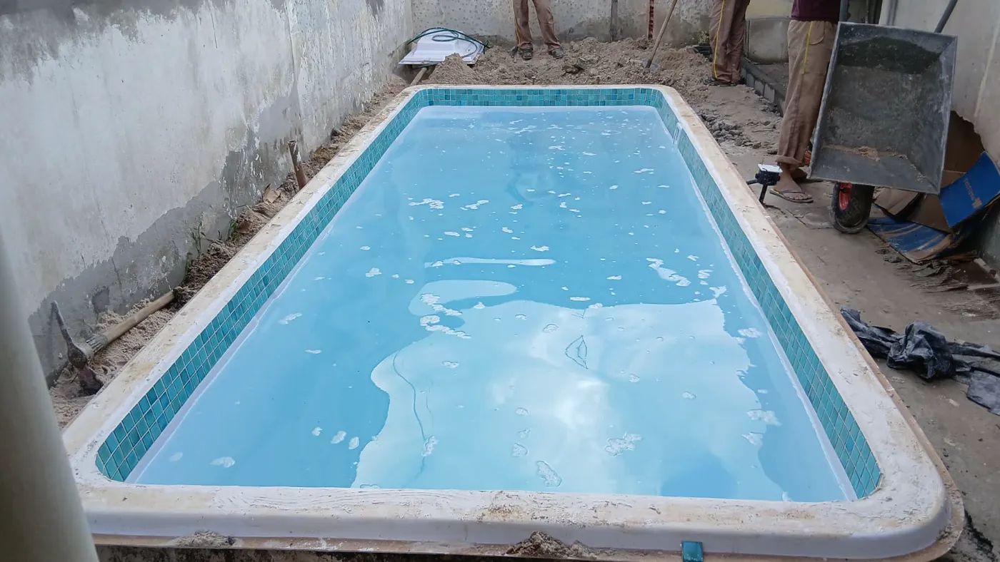

É natural querer uma faixa de preço antes de conversar com uma loja. Mas duas casas da mesma cidade podem exigir soluções bem diferentes. Por isso, um orçamento responsável precisa separar o valor do produto dos serviços e acabamentos necessários em cada espaço.
O que influencia o preço da piscina de fibra?
Modelo e dimensões
Comprimento, largura, profundidade, formato e recursos do modelo influenciam o investimento. A melhor escolha não é necessariamente a maior: deve haver circulação segura e proporção com o quintal.
Acesso e preparação do local
É preciso avaliar por onde a piscina chegará, como equipamentos e materiais acessarão o imóvel e quais ajustes serão necessários no terreno. Desníveis, passagens estreitas e obras complementares podem alterar o escopo.
Equipamentos, acabamento e opcionais
Filtração, casa de máquinas, borda, piso, iluminação, cascata, aquecimento e soluções de tratamento da água devem aparecer de forma clara. Pergunte sempre o que está ou não incluído.
Está planejando o projeto em Salvador? Conheça a página de piscinas de fibra em Salvador, com orientações sobre modelos, instalação e informações para solicitar orçamento.
Como comparar um orçamento de piscina em Salvador?
A tabela abaixo é um checklist, não uma lista de serviços automaticamente incluídos pela Linha Verde. Use-a para comparar propostas de fornecedores com o mesmo escopo e evitar surpresas com itens que ainda não foram considerados.
| Item da proposta | O que confirmar por escrito | Por que influencia o custo |
|---|---|---|
| Casco e modelo | Nome, medidas, profundidade, cor e condições de garantia | As características do modelo variam |
| Transporte e acesso | Entrega, movimentação até o quintal e restrições de passagem | Portões estreitos e obstáculos podem alterar a logística |
| Preparo do terreno | Escavação, nivelamento, drenagem e destinação de material, quando necessários | Cada terreno exige uma avaliação própria |
| Instalação e equipamentos | Filtração, casa de máquinas, hidráulica, elétrica e mão de obra | O conjunto de equipamentos e serviços muda a proposta |
| Acabamentos | Bordas, piso, deck, iluminação e serviços de entorno | O preço do casco não equivale ao da área pronta |
| Opcionais e pós-venda | Cascata, aquecimento, tratamento de água, assistência e condições de garantia | Itens opcionais ou responsabilidades adicionais precisam ficar claros |
Dois cenários para entender a diferença entre propostas
Casa com acesso livre e área já planejada
Quando o quintal oferece passagem adequada e a infraestrutura já foi avaliada, o orçamento pode concentrar-se no modelo, na instalação e nos acabamentos desejados. Mesmo assim, é necessário confirmar o terreno e os serviços incluídos.
Casa com acesso restrito e terreno desnivelado
Com corredores estreitos, obstáculos ou necessidade de preparação adicional, o planejamento da entrega e das intervenções no local se torna mais relevante. Nesse cenário, comparar apenas o valor do casco tende a esconder parte do custo total.
Esses cenários são ilustrativos, não orçamentos reais: não implicam preço, prazo ou solução técnica garantidos para nenhum imóvel.

Quais modelos podem entrar na comparação?
Para começar a filtrar opções, o catálogo de referência de modelos e medidas apresenta piscinas de diferentes tamanhos. Compare dimensões e espaço de circulação, mas confirme com a equipe a disponibilidade do fabricante, do modelo e dos acessórios. Para projetos com hidromassagem, conheça também a página de spas residenciais na região de Salvador.
Dúvidas frequentes sobre preço de piscina em Salvador
Quanto custa uma piscina de fibra pronta para uso?
Não há valor único: produto, transporte, terreno, instalações, equipamentos e acabamento precisam entrar na avaliação. A Linha Verde pode orientar sobre o que deve ser considerado na proposta, conforme as condições comerciais vigentes.
O que enviar para receber uma estimativa inicial?
Informe bairro, dimensões aproximadas e fotos do quintal e do caminho de acesso. Se houver condomínio, desnível ou obras planejadas, descreva essas condições e os opcionais desejados.
É possível comparar duas propostas com preços diferentes?
Sim, desde que os modelos, equipamentos, serviços incluídos, garantias, transporte e responsabilidades estejam discriminados. Uma oferta sem preparo do terreno ou acabamento não é diretamente comparável a uma instalação completa.
Como pedir uma estimativa inicial mais útil
Antes do contato, reúna informações simples. Elas ajudam a equipe a filtrar as opções compatíveis e evitam comparações de propostas com escopos diferentes.
- cidade e bairro do imóvel;
- fotos amplas do quintal e do caminho de acesso;
- medidas aproximadas da área disponível;
- uso esperado: relaxamento, lazer em família, receber pessoas ou outro;
- recursos que você considera importantes.
Como comparar propostas
Compare o conjunto, não apenas o número final. Confira modelo, equipamentos, transporte, instalação, preparação da área, acabamento, garantias, forma de pagamento e responsabilidades de cada parte. Se algo estiver genérico, peça que seja detalhado por escrito.
Uma conversa inicial pode indicar caminhos, mas a confirmação depende da avaliação técnica e comercial. Essa etapa protege o cliente de surpresas e ajuda a escolher uma solução coerente com a casa.
Para acompanhar o resultado de uma obra real, veja nosso registro de instalação de piscina residencial; a localização do caso não deve ser confundida com a deste artigo.